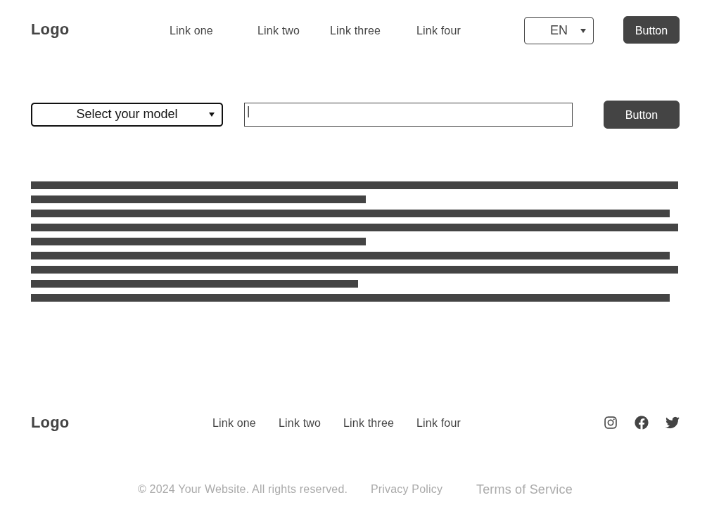
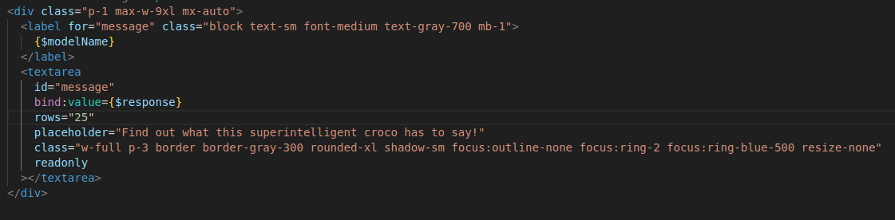
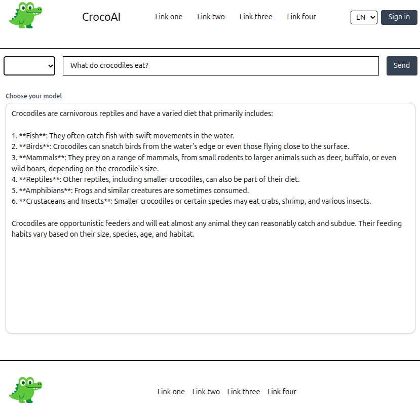

Initial wireframe design.
This is the first idea of how the app should look. I found a great tool that allows me to easily create wireframe designs. Even with SvelteKit, which simplifies many things, I found it challenging to get the design just right. Adjusting page elements correctly can be a daunting experience. For this reason, I tried giving the wireframe to ChatGPT. This helped a lot, and with some adjustments, I got a result very close to the wireframe.
I find understanding the dynamic and backend processes more interesting than manually programming the entire page layout. The user should be able to choose a model, type their question, and see the response in that characteristic streaming style. I’m not too worried about what the links and buttons in the top bar should be—most of them will probably be unnecessary as long as this remains a prototype without user accounts, databases, or sign-in options.

Example illustrating the number of Tailwind class attributes needed for one UI component — an area where AI support greatly improved workflow speed.

Technology stack used: SvelteKit, TailwindCSS, Node.js backend with OpenRouter API integration.
Demo version.
Basic functionality was achieved at this point. The user can now choose and chat with any model from the list of dozens of models provided by OpenRouter. These include popular models like those from DeepSeek and more exotic ones like Sarvamai, as seen in the video.
At this stage, I stored the model names in a separate static JSON file that I manually downloaded. However, this file didn’t contain as many models as I wanted. It would also be nice to always see the latest models as they are added. For these reasons, I created a web-scraping function using the JavaScript Puppeteer library that runs each time the program starts. The function returns the latest list of free models OpenRouter offers. By “free model,” I mean those with unlimited free credits. It was possible to get responses from models requiring paid credits, but once the free quota is exceeded, they stop responding.
Added multiline chat support to handle longer prompts and maintain conversational flow.
Hundreds of models.
I expanded the model list to include hundreds of different models—many of which I had never even heard of. Browsing through them is genuinely interesting. I also updated the UI. The user can now write multi-line questions, expand the text area from the bottom-right corner, and send the message using the Enter key.
At this point, I added the Firebase library and learned how to host a website in the cloud. This still isn’t something I want to host publicly, and I was a bit anxious about hidden costs or bot traffic charges. Since free GitHub Pages only supports static websites, it’s still nice to know how to deploy a dynamic web app—and maybe even monetize it in the future.